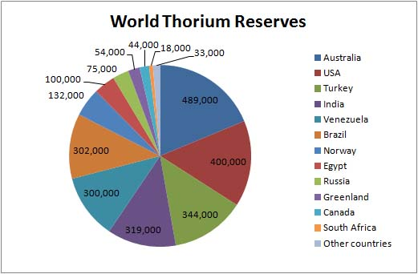

There are currently 5 million tons of thorium reserves in the World.
The majority of these reserves in already developed countries:
US
Canada
Austrailia
Russia
Norway
Turkey
One ton of thorium can produce as much energy as 200 tons of Uranium or 3.5 million tons of coal.
So while the worlds current coal reserves total 1.1 trillion tons
Sill produce 3.1 trillion tons of CO2, and will last 150 years.
Thorium reserves are in the millions, and will last 1,000 years without CO2 production.